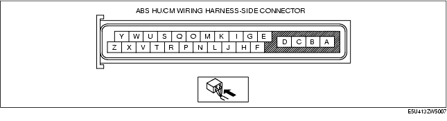

Workshop Manual ➭ BRAKES ➭ ANTILOCK BRAKE SYSTEM ➭ ABS HU/CM INSPECTION
ABS HU/CM INSPECTION
id041300801000
{: #wp1058562}
-
Disconnect the ABS HU/CM connector.
-
Connect the negative battery cable.
-
Attach the tester lead to the ABS HU/CM harness side connector, then inspect voltage, continuity or resistance according to the standard (reference value) on the table.
Standard (Reference Value)

|
Signal name {: #wp1058806} |
Connected to {: #wp1058808} |
Measured item {: #wp1058810} |
Measured terminal (measured condition) {: #wp1058812} |
Standard {: #wp1058814} |
Inspection item(s) {: #wp1058816} |
|
|---|---|---|---|---|---|---|
|
A {: #wp1058626} |
Ground {: #wp1058628} (ABS motor) {: #wp1059052} |
Ground point {: #wp1058684} |
Continuity {: #wp1058687} |
A-ground point {: #wp1058690} |
Continuity detected {: #wp1058693} |
• Wiring harness (A-ground point) {: #wp1058696} |
|
B {: #wp1058851} |
Power supply {: #wp1058854} (ABS motor operation) {: #wp1059105} |
Battery {: #wp1058857} |
Voltage {: #wp1058860} |
Under any condition {: #wp1058863} |
B+ {: #wp1058866} |
• Wiring harness (B-battery) {: #wp1058869} |
|
C {: #wp1058873} |
Power supply {: #wp1058876} (solenoid) {: #wp1059157} |
Battery {: #wp1058879} |
Voltage {: #wp1058882} |
Under any condition {: #wp1058885} |
B+ {: #wp1058888} |
• Wiring harness (C-battery) {: #wp1058891} |
|
D {: #wp1058895} |
Ground {: #wp1058898} (ABS system) {: #wp1059209} |
Ground point {: #wp1058901} |
Continuity {: #wp1058904} |
D-ground point {: #wp1058907} |
Continuity detected {: #wp1058910} |
• Wiring harness (D-ground point) {: #wp1058913} |
|
E {: #wp1058917} |
LF wheel-speed sensor (ground) {: #wp1058920} |
LF ABS wheel-speed sensor {: #wp1058923} |
Continuity {: #wp1058926} |
E-LF ABS wheel-speed sensor connector terminal B {: #wp1058929} |
Continuity detected {: #wp1058932} |
• Wiring harness (E-LF ABS wheel-speed sensor connector terminal B) {: #wp1058935} |
|
F {: #wp1058939} |
LF wheel-speed sensor (single) {: #wp1058942} |
LF ABS wheel-speed sensor {: #wp1058945} |
Continuity {: #wp1058948} |
F-LF ABS wheel-speed sensor connector terminal A {: #wp1058951} |
Continuity detected {: #wp1058954} |
• Wiring harness (F-LF ABS wheel-speed sensor connector terminal A) {: #wp1058957} |
|
G {: #wp1058961} |
LR wheel-speed sensor (signal) {: #wp1058964} |
LR ABS wheel-speed sensor {: #wp1058967} |
Continuity {: #wp1058970} |
G-LR ABS wheel-speed sensor connector terminal A {: #wp1058973} |
Continuity detected {: #wp1058976} |
• Wiring harness (G-LR ABS wheel-speed sensor connector terminal A) {: #wp1058979} |
|
H {: #wp1058983} |
LR wheel-speed sensor (ground) {: #wp1058986} |
LR ABS wheel-speed sensor {: #wp1058989} |
Continuity {: #wp1058992} |
H-LR ABS wheel-speed sensor connector terminal B {: #wp1058995} |
Continuity detected {: #wp1058998} |
• Wiring harness (H-LR ABS wheel-speed sensor connector terminal B) {: #wp1059001} |
|
I {: #wp1059454} |
RR wheel-speed sensor (signal) {: #wp1059457} |
RR ABS wheel-speed sensor {: #wp1059460} |
Continuity {: #wp1059463} |
I-RR ABS wheel-speed sensor connector terminal A {: #wp1059466} |
Continuity detected {: #wp1059469} |
• Wiring harness (I-RR ABS wheel-speed sensor connector terminal A) {: #wp1059472} |
|
J {: #wp1059527} |
Power supply {: #wp1059530} (system) {: #wp1059583} |
Ignition switch {: #wp1059533} |
Voltage {: #wp1059536} |
Ignition switch at ON {: #wp1059539} |
B+ {: #wp1059542} |
• Wiring harness (J-ignition switch) {: #wp1059545} |
|
Ignition switch is off. {: #wp1059561} |
1 V or less {: #wp1059564} |
|
||||
|
K {: #wp1059638} |
|
|
|
|
|
|
|
L {: #wp1059695} |
RR wheel-speed sensor (ground) {: #wp1059698} |
RR ABS wheel-speed sensor {: #wp1059701} |
Continuity {: #wp1059704} |
L-RR ABS wheel-speed sensor connector terminal B {: #wp1059707} |
Continuity detected {: #wp1059710} |
• Wiring harness (L-RR ABS wheel-speed sensor connector terminal B) {: #wp1059713} |
|
M {: #wp1059768} |
RF wheel-speed sensor (signal) {: #wp1059771} |
RF ABS wheel-speed sensor {: #wp1059774} |
Continuity {: #wp1059777} |
M-RF ABS wheel-speed sensor connector terminal A {: #wp1059780} |
Continuity detected {: #wp1059783} |
• Wiring harness (M-RF ABS wheel-speed sensor connector terminal A) {: #wp1059786} |
|
N {: #wp1059841} |
Brake switch {: #wp1059844} |
Brake switch {: #wp1059847} |
Voltage {: #wp1059850} |
N-brake switch {: #wp1059853} (Brake pedal depressed) {: #wp1059914} |
B+ {: #wp1059856} |
• Wiring harness (N-brake switch) {: #wp1059859} • Brake switch {: #wp1059941} |
|
Y-brake switch {: #wp1059875} (Brake pedal not depressed) {: #wp1059958} |
1 V or less {: #wp1059878} |
|||||
|
O {: #wp1059967} |
RF wheel-speed sensor (ground) {: #wp1059970} |
RF ABS wheel-speed sensor {: #wp1059973} |
Continuity {: #wp1059976} |
O-RF ABS wheel-speed sensor connector terminal B {: #wp1059979} |
Continuity detected {: #wp1059982} |
• Wiring harness (O-RF ABS wheel-speed sensor connector terminal B) {: #wp1059985} |
|
P {: #wp1060040} |
|
|
|
|
|
|
|
Q {: #wp1060097} |
|
|
|
|
|
|
|
R {: #wp1060154} |
|
|
|
|
|
|
|
S {: #wp1060211} |
|
|
|
|
|
|
|
T {: #wp1060268} |
|
|
|
|
|
|
|
U {: #wp1060325} |
|
|
|
|
|
|
|
V {: #wp1060382} |
|
|
|
|
|
|
|
W {: #wp1060439} |
|
|
|
|
|
|
|
X {: #wp1060496} |
|
|
|
|
|
|
|
Y {: #wp1060553} |
CAN_L {: #wp1060556} |
DLC-2 (CAN_L) {: #wp1060559} |
Continuity {: #wp1060562} |
Y-DLC-2 terminal CAN_L {: #wp1060565} |
Continuity detected {: #wp1060568} |
• Wiring harness (Y-DLC-2 terminal CAN_L) {: #wp1060571} |
|
Z {: #wp1060633} |
CAN_H {: #wp1060636} |
DLC-2 (CAN_H) {: #wp1060639} |
Continuity {: #wp1060642} |
Z-DLC-2 terminal CAN_H {: #wp1060645} |
Continuity detected {: #wp1060648} |
• Wiring harness (Z-DLC-2 terminal CAN_H) {: #wp1060651} |